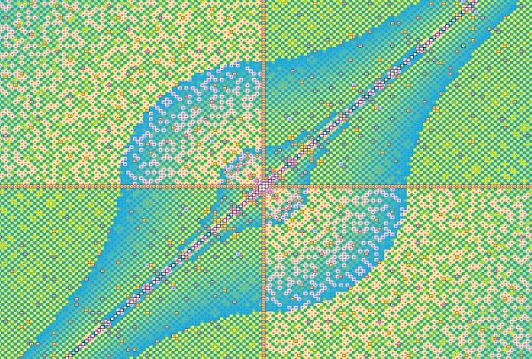

БЕСКОНЕЧНОЕ ИСПРАВЛЕНИЕ*См. также: Эй, Земля! 🎧(ЛОНО ПРИРОДЫ)
ПриРода, Душа сотворенного Мира,
Творцом, Властелином, Хозяином судеб
Оплодотворяема непостижимо
В Святом Непрерывном и Вечном Зивуге
Являясь Его нестерпимо желанной,
Готовой Принять и Зачать в Своем Лоне
Невестой, Возлюбленной, Истинной Парой
И вместе с тем, юной невинною Дочкой
Творец, Ее Царь и Отец, и Хозяин
Влеком, зачарован, с великою Страстью
Ее сделать Женщиной, снова и снова
Давать Ей Давать Ему половой лаской
Смести все преграды, открыть Свое Лоно
Для мощи Духовной Огня Полового
Чтоб Матерью стать Его Нового Мира
Единого с Ним, как Она с Ним Едина
Единого с Ней Его смертного Сына,
Рожденного, чтобы ему стать Любимой
Чтоб в трепетный миг полового взросленья
Вновь стать юной девочкой, плод вожделенья
Свой скромно и праведно в тайне хранившей
Но мощи любви половой уступившей
Как было с Ней в час сотворения Мира
Так в вечном Сейчас происходит впервые
Давая начало векам и эпохам
Цепи Эволюции, новым отсчетом
От Взрыва Большого Материи Духом
В Огне Половом первозданном Зивугом
Где время дается для жизни твореньям
Чтоб Силу желания взрослой ступени
Зачатой Отцом, ставшей Матерью Мира
ПриРодой, Его Дар хранящей для Сына
Создать, испытать, сотворить и соделать
Мог Сын Человека Живого, вновь Первым
На долгом Пути к удивительной Цели
К слиянию Духа и Чувства в твореньи
Стремясь ВсеОтцу быть в Любви к сотворенным
Подобным, и этим раскрыть Его форму
Любви между Женщиной и Мужчиной,
Дав Детям Любви править Будущим Миром...